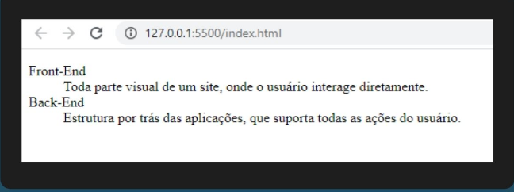

O objetivo da lista de definição é exibir termos e suas respectivas definições, como mostra a Figura:
Podemos utilizar tags HTML na estrutura de uma lista de definição, como vimos nas listas anteriores. Um item da lista de definição é formado por um termo e uma ou mais definições

Identificação de um sujeito com outro.
Se colocar no lugar de outra pessoa a fim de entendê-la.
Etimologia (origem da palavra empatia). Do grego empátheia; pelo inglês empathy.
Conjunto de regras e preceitos de ordem valorativa e moral de um indivíduo.
O que é moralmente bom ou mau, certo ou errado.
Etimologia (origem da palavra ética). Do latim ethica; pelo grego éthikós.